| Foto | Riegos identificados | Probabilidad | Consecuencias | Estimación del riesgo | Acción preventiva |
|---|---|---|---|---|---|
| 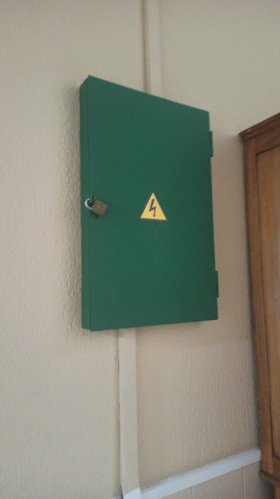 | Posible electrocución al tocarlo | Baja | Extremadamente dañino | Moderado | Candado |
| 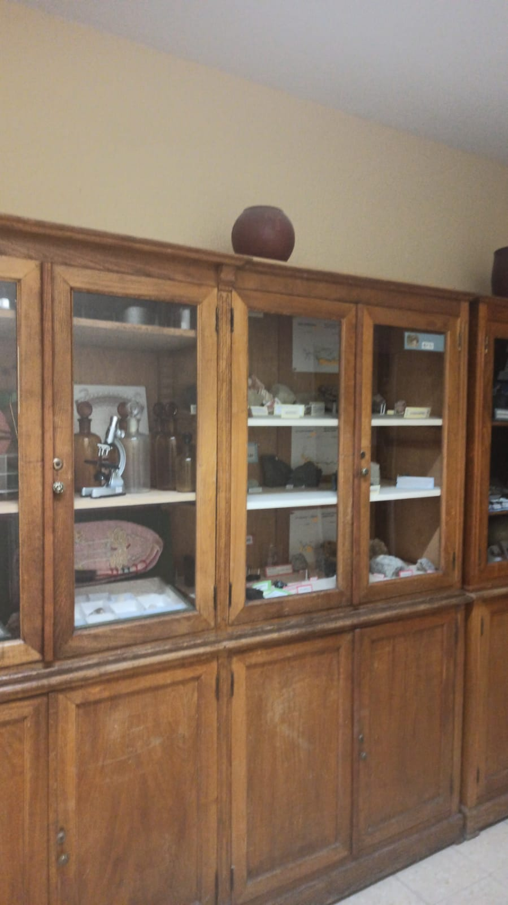 | El jarrón se puede caer | Media | Dañino | Moderado | Quitar el jarrón |
| 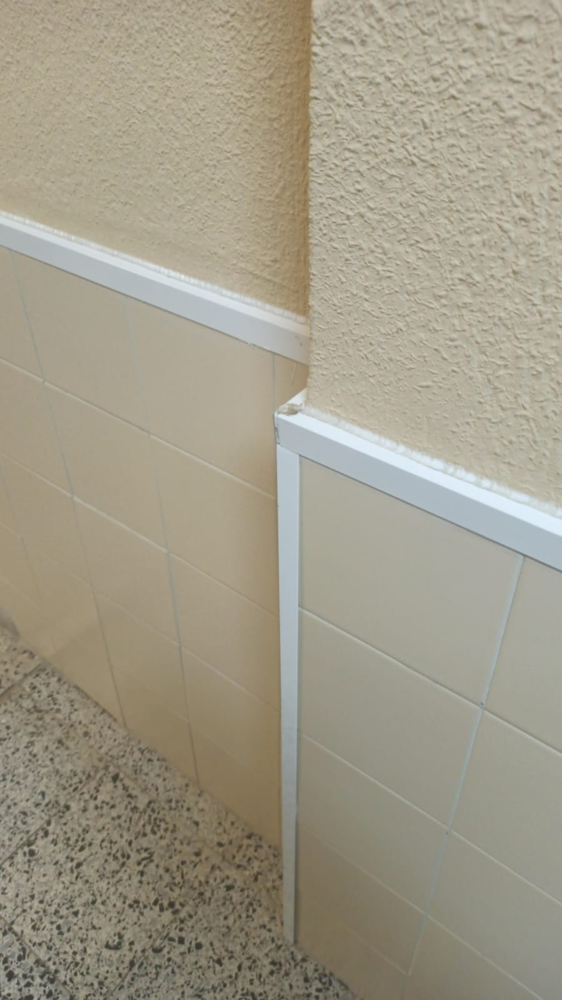 | Si vas rápido y rozas la esquina te puedes cortar | Media | Dañino | Moderado | Limar la esquina |
| 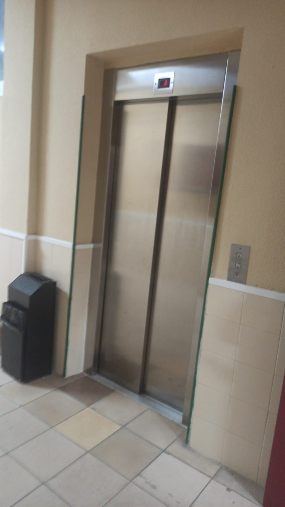 | Si el ascensor falla no hay forma de salir | Baja | Extremadamente dañino | Moderado | Inspecciones periódicas |
| 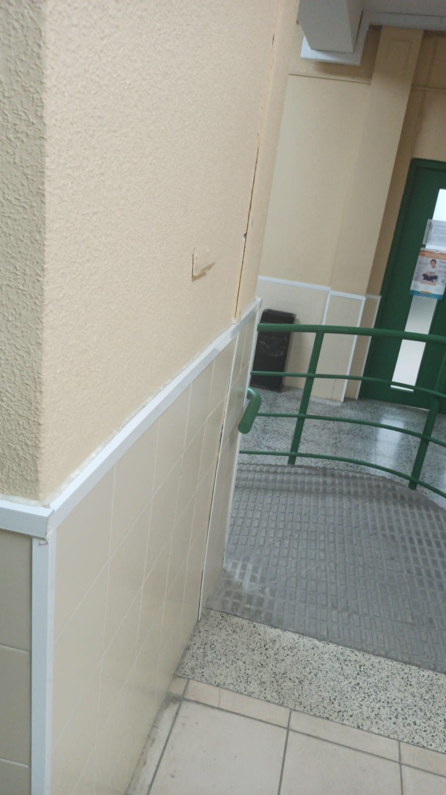 | Si vas rápido y lo rozas te cortas | Media | Dañino | Moderado | Limarlo |
| 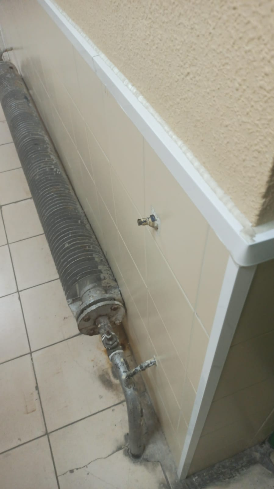 | Metal oxidado, infección por corte o quemadura. | Media | Dañino | Moderado | Lijar y quitar el óxido. Renovación de la calefacción |
| 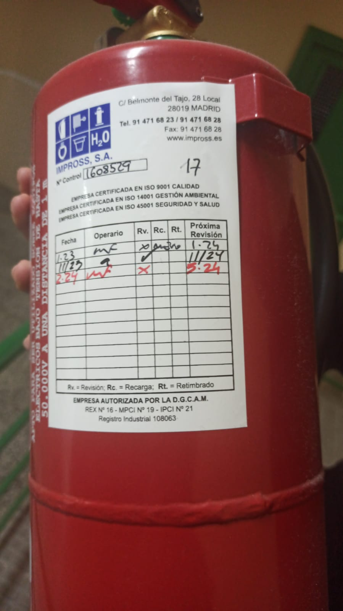 | No pone la fecha de caducidad | Baja | Dañino | Tolerable | Pasar inspección y comprobar fecha |
| 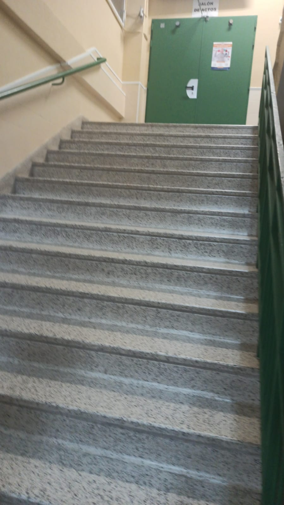 | Tropiezo / caída | Baja | Dañino | Tolerable | Papel de lija en cada escalón y barandillas a los lados |
| 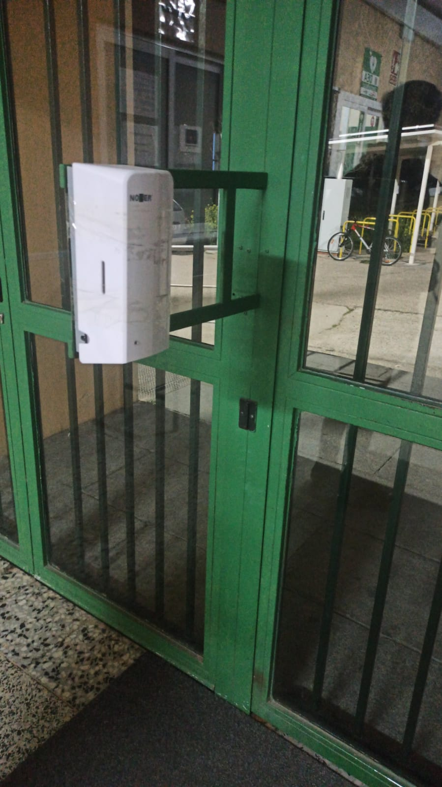 | Golpe / corte | Media | Ligeramente dañino | Tolerable | Ponerlo en otro sitio, pegado a la pared |
| 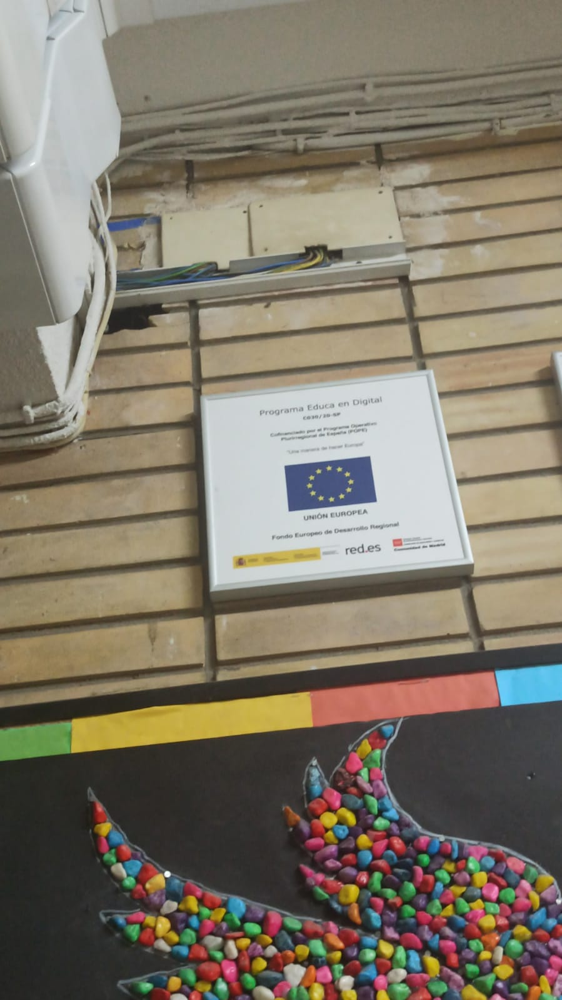 | Cables pelados | Baja | Extremadamente dañino | Moderado | Cerrar los cables con aislante/cambiarlos |
| 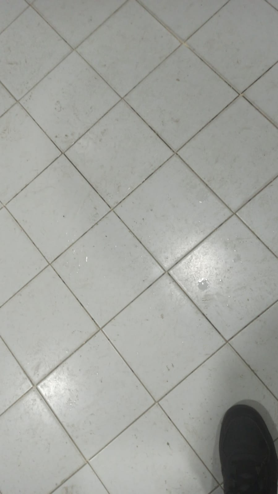 | Agua en el suelo del baño, sin rendijas. | Baja | Dañino | Tolerable | Pedir con carteles cuidado con el agua/revisiones de limpieza/ventilación más efectiva |
| 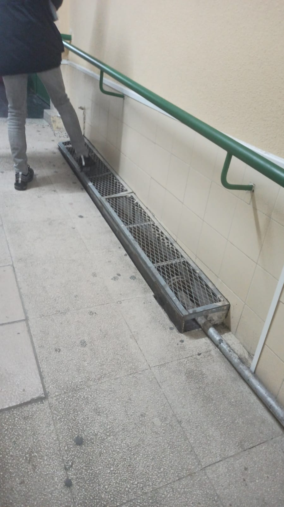 | Metal cuadrado inestable a ras del suelo. | Baja | Dañino | Tolerable | Renovación de la calefacción |
| 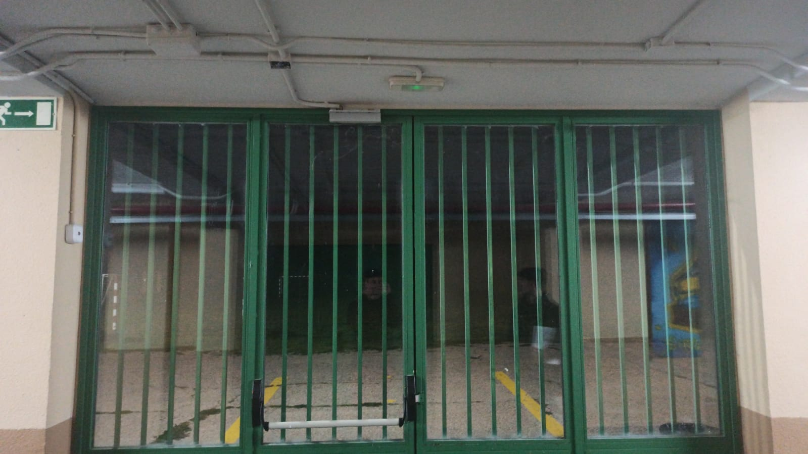 | Poca visibilidad de la luz de emergencia, ilumina menos que las demás. | Baja | Dañino | Tolerable | Cambiar las bombillas/cristal para que se vea desde todos los ángulos |
| 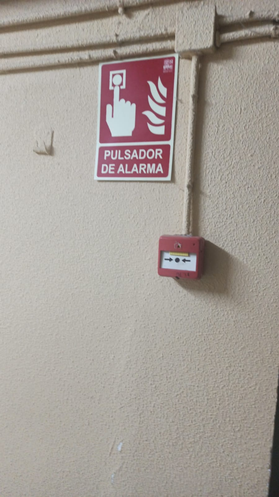 | Hay un cartel que explica qué es ese botón | Baja | Ligeramente dañino | Trivial | Nada |
| 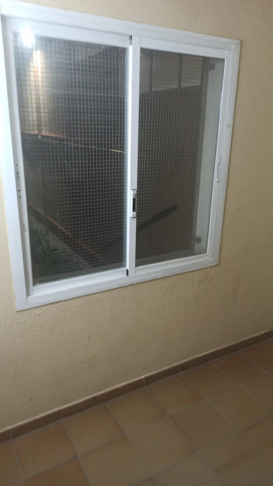 | Red metálica anti-salida. | Baja | Extremadamente dañino | Moderado | Nada |
| 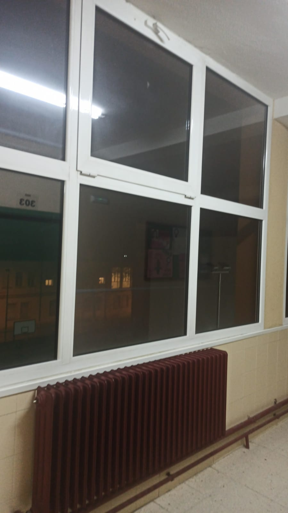 | Ventana de marco metálico y cristal, abre hacia abajo. | Baja | Extremadamente dañino | Moderado | Cambiar ventana para que abra hacia el lado. Poner candado |
| 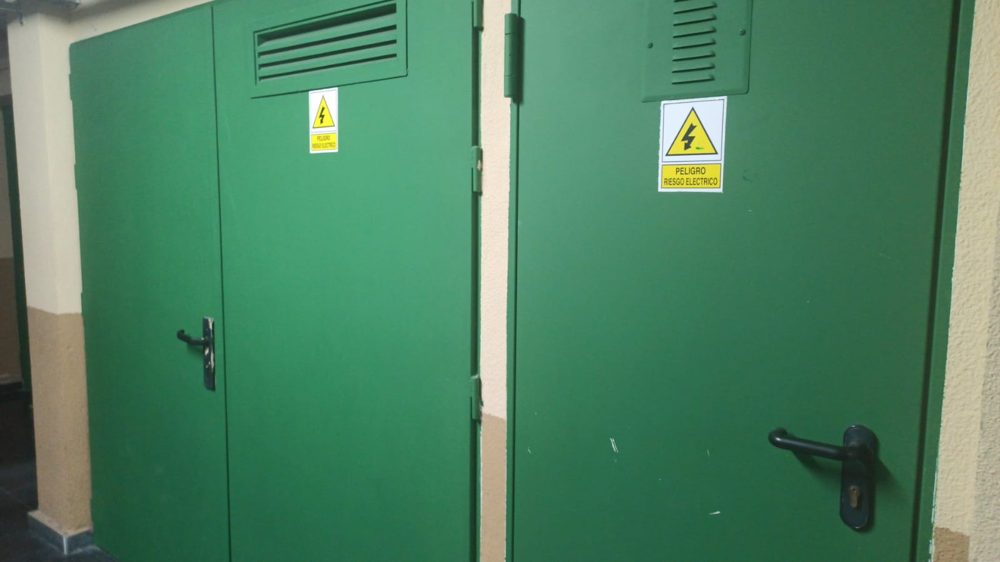 | Peligro de electrocución si estuviera la puerta abierta. | Baja | Extremadamente dañino | Moderado | Candado |